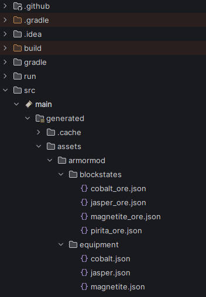
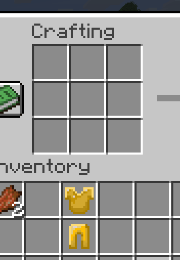
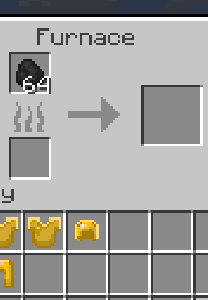
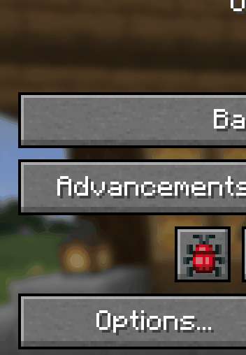

Developed a data-driven Minecraft mod in Java using IntelliJ IDEA and the Fabric API that introduces four new functional ores: Jasper, Magnetite, Pyrite, and Cobalt. These materials act identically to vanilla mechanics and include custom armor sets, featuring textures and pixel art fully designed by me in AseSprite.

Here we can see the project infrastructure.


All custom items are fully functional and programmed to behave exactly like vanilla base-game items.

This is the result of all the items, fully designed and programmed by me.